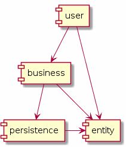
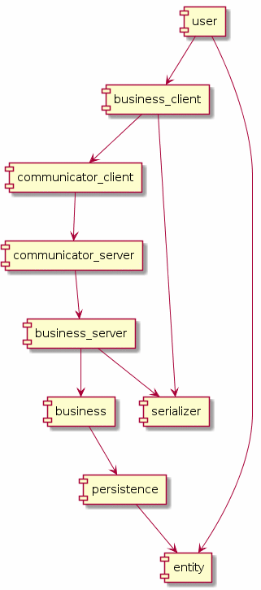

Software Structure
tenacitas proposes a software strucure, for code and directories, that groups code (classes, functions, etc) in, at least four layers:
entities
– code that implements the objects, or data, found in the problem.
Employee, Rotation,
Planet, Phone
are examples of entities.
business
– code that implements the business functions that manipulate the
entities. Hire Employee, Apply
Rotation, Draw Planet, Send
SMS to Phone are examples of business functions.
user - code that allows
the User to interact with the business
layer.
persistence – code that saves
entities in a media. Update
Employee Address, Save
Last Rotation, Save Planet Color,
Delete Phone are examples of persistence
functions.
The following diagram show a macro perspective of these layers:

It is importante to notice that the user
layer does not access the persistence
layer; the business does not access the
user; the persistence
does not interact with the user; the
persistence does not access the
business; all layers access the entity.
If the software is distributed, layers of communication become
necessary. However, the layers described above should not be aware
that the layer it is interacting is remote. We propose the use of
clients with the same interface that the original layer would
provide. So, there would be a business_client,
with the same interface as business. The
user would call business_client
functions, not aware that the functions will be executed remotely.
The business_client would interact with
a serializer and a communication
layer, in order to send serialized entity
to a remote communication layer, which
will deliver the serialized entity to a
business_server, which would use the
same serializer to reconstruct the
entitiy, in order to finally pass it to
a business function.
The diagram below revisits the structure above, introducing the proper clients, servers, communication and serializers.

The diagram ilustrates the situation where the business becomes remote, but the same principles apply if the persistence run on a different machine.